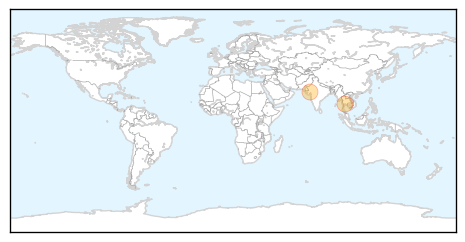

Unknown
30-Day Web Trend
0 alerts, 0 warnings

30-Day Twitter Trend
0 alerts, 0 warnings

Article Locations

Article Confidences

Top Articles:
- 0.990
- Is Lyme disease more widespread than thought? CDC thinks so; area experts aren't so sure
- 0.976
- 134 Cases Recorded, Mostly Linked to Pork
- 0.966
- Tainted drinking water plays important role in waterborne disease
- 0.963
- Patient being tested for possible case of Middle East Respiratory Syndrome
- 0.958
- Yosemite National Park
- 0.945
- How Did Cryptosporidium Find its Way into the Lancashire Water Supply?
- 0.934
- Legionnaires' disease returns to former 'outbreak' site
- 0.932
- Cleveland hospital: Ohio woman dies of Legionnaires’ disease
- 0.922
- Bronx Legionnaires’ outbreak under control, not gone in NYC
- 0.917
- Chicago Tribune
- 0.917
- Chicago Tribune
- 0.917
- Chicago Tribune
- 0.909
- Chickenpox: Symptoms, Causes, Diagnosis
- 0.905
- Mono vaccine effective in animal trials
- 0.872
- Brain-eating amoeba kills lake swimmer
- 0.866
- Oklahoma man dies from brain-eating amoeba
- 0.856
- Tick-ing Time Bomb: Lyme Disease Conquers New Territory
- 0.854
- Encephalitis kills 3 in Garo hills
- 0.851
- Bird flu spreads to third location in Ivory Coast
- 0.848
- South Sudan: On pace for a second, exceptionally severe malaria season
- 0.817
- Study of global disease outbreak uses human waste
- 0.792
- More nurses diagnosed with tuberculosis at Portimão Hospital
- 0.789
- Indiana health officials investigate E. coli reports
- 0.781
- Family of child sickened by salmonella sues over tainted hog meat
- 0.767
- Blue-green algae poses threat to US water systems
- 0.763
- No live animals can be taken to Bulgaria’s Rila Monastery and back
- 0.761
- Three new African swine fever cases confirmed in Lithuania :: The Baltic Course
- 0.750
- Toxic Algae is a Threat to Our Water
- 0.734
- China's Rare Patients Dancing for Rare Awareness
- 0.734
- Do's and don'ts of antibiotics for common conditions
- 0.704
- UN health agency kicks-off campaign honouring world’s health workers
- 0.703
- Roundup: Lithuania struggling to curb African Swine Fever
- 0.687
- S. Sudan suspends peace talks despite sanctions threat
- 0.687
- IMF praises Spanish economic rebound, flags growth concerns
- 0.687
- In photos: The US and Cuba’s divided half-century
- 0.687
- Media circus at Tel Aviv 'beach day’ in Paris
- 0.687
- Kerry oversees raising of US flag at embassy in Havana
- 0.687
- Japanese prime minister expresses ‘profound grief’ for WWII dead
- 0.687
- Greek lawmakers approve third bailout deal, Tsipras faces confidence vote
- 0.687
- Eurogroup approves third bailout for debt-ridden Greece
- 0.685
- Sudan Vision Daily
- 0.656
- Wolf River Blasto cases up to 13
- 0.654
- Wet weather blamed for record human plague cases in Colorado
- 0.651
- Africa celebrates one year without polio — UN
- 0.649
- Sorry, deze pagina kon niet gevonden worden.
- 0.639
- Early Disease Detection Protects Countries From Disaster
- 0.628
- Animas River open for recreational use, sheriff said
- 0.624
- Alabama boys dramatically fall behind national average for receiving HPV vaccine
- 0.615
- GlaxoSmithKline shuts down its manufacturing plant in Zebulon following bacterial outbreak
- 0.613
- Living on hope Sabuta's fight against HIV
Showing top 50 articles...
Top Tweets:
- 0.694
- RT: FLU SCAN: Global AI outbreaks, flu diversity in Latin American swine http://t.co/wkArIk1aZt
- 0.602
- RT: Un lago dentro de un cráter, en Islandia. Foto de Antony Spencer http://t.co/Jdg7gH89yw
- 0.584
- De la duda nace el conocimiento, de la duda emana la sabiduría. De adulto dócil no se puede dudar, no se puede cuestionar. (2/5)
- 0.566
- Saudi Arabia reports +4 MERS cases in the Riyadh outbreak and one death. Link not seen for one of the cases yet. http://t.co/QthuDYoWFh
- 0.546
- El hecho de que existen mosquitos significa que Jehová no quería que fuéramos completamente felices.
Swine Flu
30-Day Web Trend
0 alerts, 0 warnings

30-Day Twitter Trend
0 alerts, 0 warnings

Article Locations
Article Confidences

Top Articles:
Top Tweets:
-
No tweets found for Aug 14, 2015